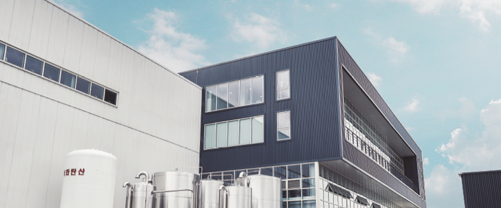

ABOUT US
WE ARE
왜 한국인들의 인생 맥주는 수입맥주일까?왜 소맥 문화가 아닌 맥주만의 문화가 없을까?
왜 맥주가 탄생하는 과정을 보여주고 알려줄 수 없을까?
왜 우리나라에는 꼭 가보고 싶은 양조장이 없을까?
제주맥주가 태어난 이유인 이 질문들에 대한 답이
우리가 하는 모든 일입니다.
크래프트 맥주계의 리더로,
공장이 아닌 양조장을
제조 회사를 넘어 문화 기업을 만들며
한국 맥주 시장을 새롭게 선도합니다.

ACCOMPLISHMENTS
WE ARE
국내 최초 글로벌 크래프트 맥주사
미국 뉴욕 판매 1위 크래프트맥주사 브루클린 브루어리와의 아시아 첫 파트너십
맥주업계 최초 중소벤처기업부 '예비 유니콘' 선정
누적 투자액 600억 돌파 (2020년 기준)
런칭 후 매년 200% 이상 매출 성장 (2020년 기준)
제주 양조장 방문객 누적 약 10만 명 (2020년 기준)
제주도의 새로운 관광 명소로 자리매김현대카드, 배틀그라운드, 이니스프리, 하이랜드파크 등과의 콜라보레이션

MISSION
한국 크래프트 맥주의 선구자로 좋은 맥주를 통해맥주 미식문화를 창조합니다.